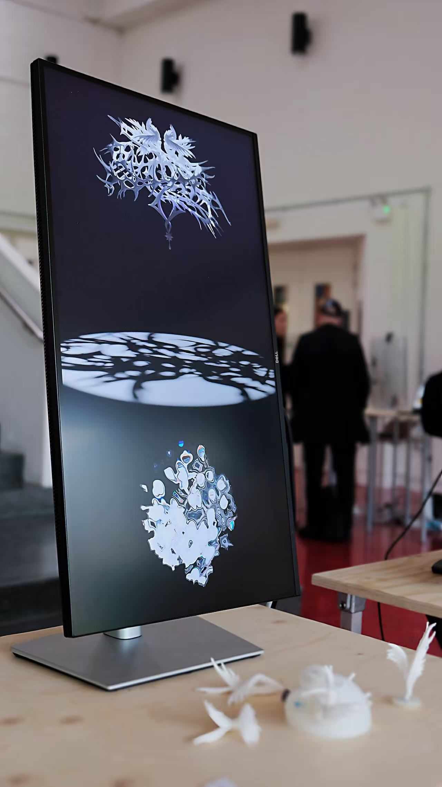
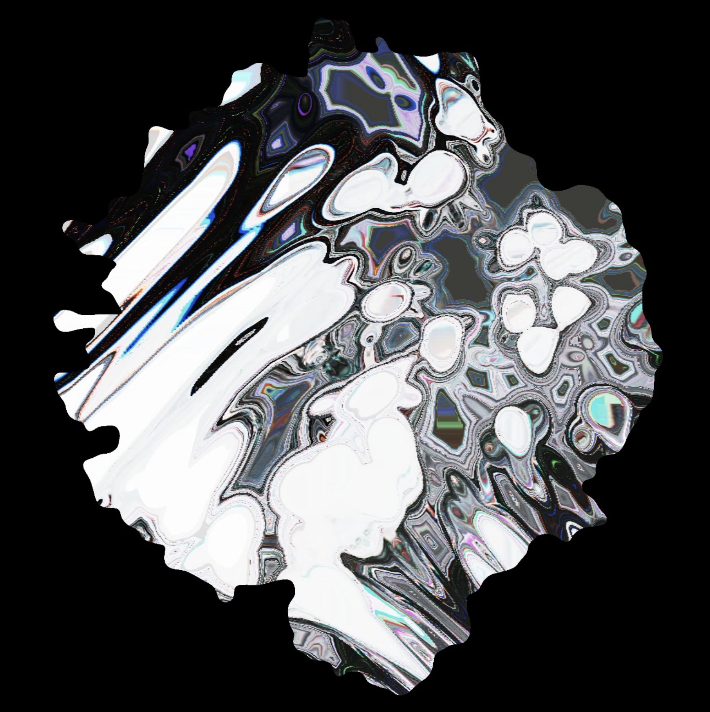
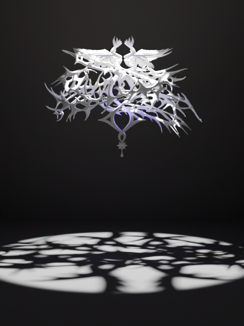

In the Presence Of ████ explores the idea of the unknown. It is inspired by H. P. Lovecraft’s concept of the “indescribable,” where what is truly unsettling is not the monster itself, but humanity’s inability to understand its nature. Rather than revealing the nature of the unknown, the work aims to create an experience of encountering it. When faced with things that cannot be explained or defined, people instinctively try to give them form, meaning, and names. Yet the world as we understand it may only be a small part of a much larger system on the scale of the universe.
Lele Li